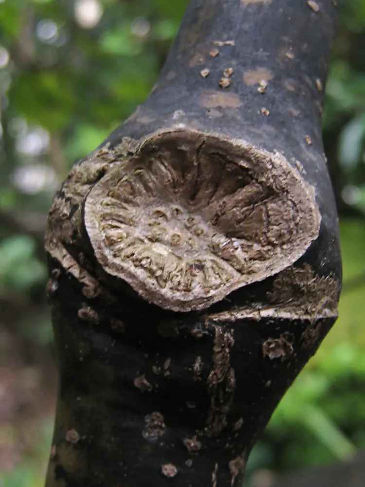

没有扩大的浅色斑纹
浅色痕迹不再扩大。还在扩展的褐点用茎斑那一条。叶上同样不再扩大的浅痕用叶那一条。

先看哪里
在斑痕旁放一把尺拍照，观察树皮是否已在伤口周围愈合，并对比边缘是否继续扩大。
可能原因与下一步
枝条摩擦、绑带过紧或旧剪口都可能留下浅色疤痕。解除摩擦或勒压；如果斑痕扩大或新梢萎蔫，再排查持续损伤。
怎样区分相似问题
看看浅色痕迹是否沿支撑线边缘分布，或正对交叉枝。找到形状吻合的接触点，比单凭颜色推断原因更有用。
正面、侧面都看一下浅色条痕。轻转花盆，看它是否正对支架、盆沿或交叉枝，接触的另一面有没有相应磨痕。窗边有风时枝条才可能碰到支架，静止时两者之间有空隙也值得查。
现在可以做什么
绑带已经压入茎表面时，松开受压的位置。保留撑住枝条所需的支撑，避免把同一个紧箍挪到另一段完好的树皮上。
找到摩擦处后留出空隙，或用宽松软带调整支架位置。保留疤痕便于对照；刮掉变浅的表皮既会造成新伤，也让后续难以比较。如果怀疑虫害，用放大镜看邻近嫩叶和褶皱里的活虫，再决定怎样处理。
接下来观察什么
枝条伸长后，比较旧擦痕前方的树皮。如果同一方向又出现新的线状擦痕，观察支架在起风时是否仍会碰到枝条。
拍照时把一个叶节也拍进去作参照。茎增粗时，旧疤也可能随着拉宽。若接触区以外出现新条痕、刚展开的叶子有黑点，或疤缘变软，重点检查这些新变化。
划痕是否与支撑物吻合
在有风时从侧面看枝条和支架是否在同一高度接触。把原来的绑绳、花盆边缘或相邻枝条也拍进去。如果同一侧反复起浅色痕，先缓解摩擦，再看新长茎段是否仍有同样伤痕。旧划痕会随茎变粗而拉宽，单凭它变宽，不能判定出现了新病斑。